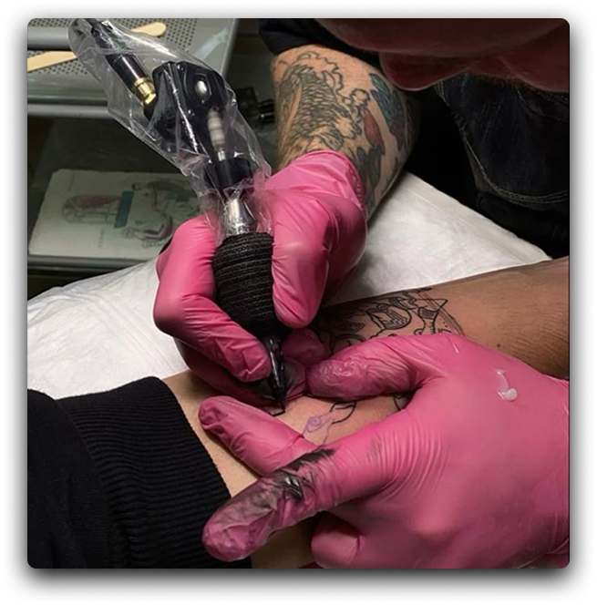
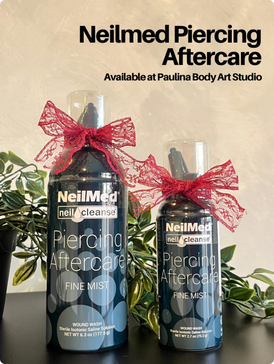
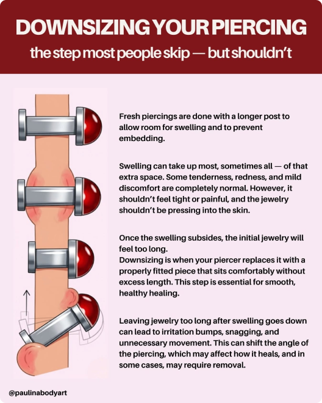

01. Protect Your New Tattoo
Keep your tattoo covered for as long as your tattoo artist advises. The recommended duration depends on the dressing used, so follow the instructions given for its safe removal.
Your tattoo is a work of art that needs proper care; it is more than just ink. To help your skin heal and keep your tattoo looking its best, follow these easy steps.

Keep your tattoo covered for as long as your tattoo artist advises. The recommended duration depends on the dressing used, so follow the instructions given for its safe removal.
Wash your hands before touching your tattoo. Gently clean the area with lukewarm water and mild, fragrance-free soap. Avoid rubbing or scrubbing, and pat dry with a clean paper towel.
Apply a light layer of fragrance-free moisturizer suitable for healing tattoos, as advised by your artist. Avoid using too much product, as excessive moisture may irritate the skin.
Mild itching, peeling, and light scabbing may occur as your tattoo heals. Allow the skin to recover without scratching, picking, or removing scabs to prevent irritation and possible damage.
Sources: Cleveland Clinic · American Academy of Dermatology · U.S. FDA
Clean gently, moisturize lightly, wear loose clothing, keep bedding clean, and follow your artist's instructions.
Scratch, peel, soak in pools or hot tubs, expose a healing tattoo to direct sunlight, or use harsh skincare products.

Trusted by professional piercers worldwide and considered the gold standard in piercing aftercare. Gentle, effective, and designed to support your piercing through every stage of healing.

Fresh piercings usually require longer jewelry to allow room for swelling. Once the swelling decreases, the extra length may cause unnecessary movement, irritation, or snagging. Downsizing involves replacing the longer jewelry with a shorter, properly fitted piece.
Most piercings may be ready for downsizing after 4–6 weeks, while some oral piercings may need it as early as 2–3 weeks. However, the right time depends on the piercing location and how quickly the swelling decreases. Always consult your piercer before changing jewelry.
Your jewelry may need downsizing if the bar appears too long, moves excessively, or frequently catches on hair, clothing, or towels. Repeated irritation or discomfort may also indicate that the jewelry needs to be checked by a professional piercer.
Properly fitted jewelry helps reduce snagging, irritation bumps, and unnecessary movement during healing. Leaving jewelry too long may contribute to delayed healing, migration, or other complications.
Jewelry downsizing should be performed by a professional piercer. They can assess the healing progress, select the appropriate jewelry length, and safely replace it without causing unnecessary irritation or injury.
Use sterile saline, keep your hands clean, sleep on clean bedding, avoid pressure, and consult your piercer about jewelry changes.
Rotate jewelry, use alcohol or hydrogen peroxide, apply unnecessary creams, remove jewelry prematurely, or swim in potentially contaminated water.